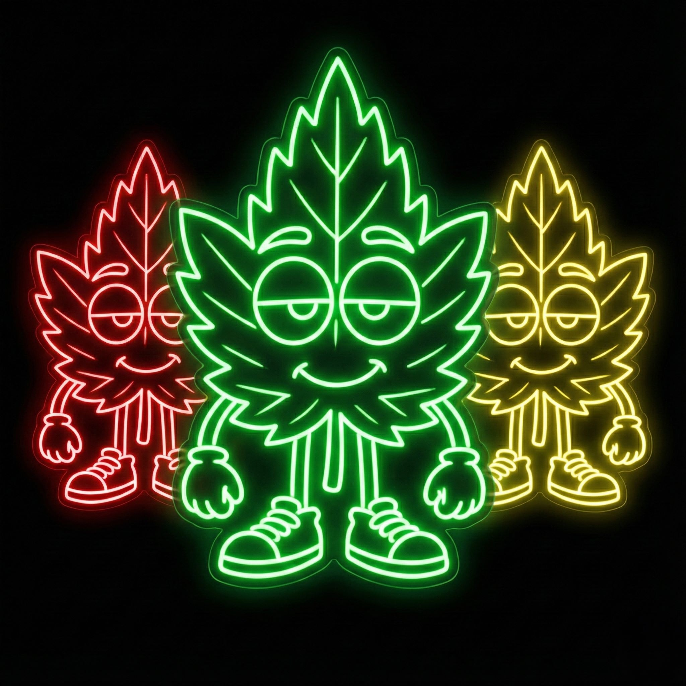

Touchez pour commencer
Joueurs
AJOUTER
LANCER LA PARTIE
CHANGEMENT DE JOUEUR
C'est au tour de :
...
C'EST PARTI !
Joueur 1
Niveau 1
DÉCOUVRIR LE THÈME
...
AFFICHER LA QUESTION
...
LES 4 PROPOSITIONS
...
Révéler la réponse (Maître du jeu)
PASSER / RATÉ
GAGNÉ !
X
0
NEON FLAP
Appuie pour voler
PERDU
Score:
0
REJOUER